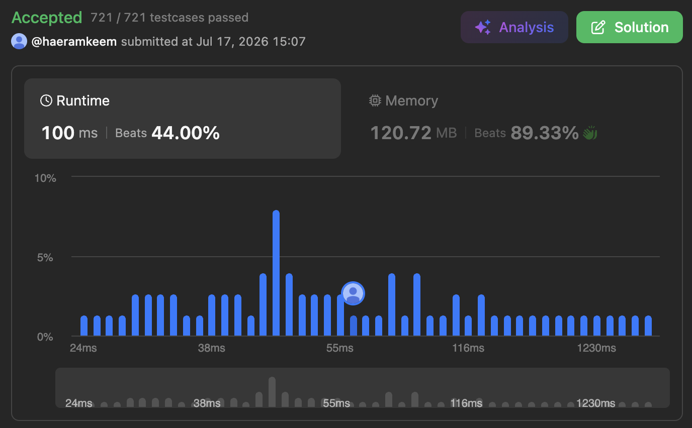

문제 링크
요약
- 약수 카운팅하기
최종
결과

- 아래 처럼 풀리면 제일 좋겠지만, 의 testcase 에서 을 돌리는건 미친짓이다.
- 그래서 이렇게 접근하면 된다:
cnt[a] == b를a로 나누었을 때 나누어지는 (나머지가 0이 되는) 숫자의 개수를b개라고 하자. 즉,a를 약수로 갖는 숫자의 개수가b인 것이다.- 이때
cnt[a]를 build 할 때는nums의 어떤 숫자에num대해 1부터 까지만 나눠보면 된다. 만약 이 범위에 있는 숫자x에 대해num % x == 0이라면 자동으로num % (num / x) == 0도 되기 때문.
- 이때
- 그럼
a를 공약수로 갖는 두 숫자 pair 의 개수는b * (b - 1) / 2개 이다. - 근데 우리는 공약수가 아닌 최대공약수가 같은 두 숫자 pair 를 찾아야 된다. 그럼
a를 큰수부터 시작해서 내려오며 pair 의 개수를 찾아야 한다. 또한, 이렇게 하면 중복 카운팅이 되므로 중복된 것도 없애야 한다. - 뭔소린지 모르겠다면
{4, 4, 3, 3}으로 예를 들어보자.cnt[]를 만들어 보면,cnt[1] == 4cnt[2] == 2cnt[3] == 2cnt[4] == 2가 될것이다.
- 그럼 가장 큰
4부터 시작하는거다.cnt[4] == 2이므로,4를 약수로 갖고 있는놈이 2개란 소리다. 지금 우리는 가장 큰4부터 시작했으니까, 이 두 숫자에 대해 이것보다 큰 공약수는 없다. 따라서 이들로 만들 수 있는 pair 의 개수는2 * (2 - 1) / 2 == 1이다.- 다음으로는
3을 보자.cnt[3] == 2이므로,3을 약수로 갖고있는놈이 2개란 소리다. 위에서와 마찬가지로, 만들 수 있는 pair 의 개수는2 * (2 - 1) / 2 == 1이다. - 또
2를 보자.cnt[2] == 2이므로,2을 약수로 갖고있는놈이 2개란 소리다. 근데 이때는 위에서랑 약간 다르다.4를 약수로 갖고있는놈은2도 약수로 갖고있다. 이게 위에서 말한 중복 카운팅이다. 따라서 이때는2를 약수로 갖고있는 놈들의 pair 수 (2개) 에서4를 약수로 갖고있는 놈들의 pair 수 (2개) 를 빼줘야 한다. 그래서 결과는 0이 된다. - 마지막으로
1을 보면cnt[1] == 4인데,2,3,4을 약수로 갖는 애들은 모두1도 약수로 갖고 있다.- 그래서
1을 공약수로 갖는 pair 수:4 * (4 - 1) / 2 == 6에서 2를 최대공약수로 갖는 pair 수: 0개3를 최대공약수로 갖는 pair 수: 1개4를 최대공약수로 갖는 pair 수: 1개- 를 빼면 가능한 pair 수는 4개인 것을 알 수 있다.
- 그래서
- 즉,
nums의 최대값이nums_max라고 하면nums_max부터 시작해1로 감소하는a에 대해:cnt[a] = cnt[a] * (cnt[a] - 1) / 2로cnt[a]를 숫자의 개수에서 pair 의 개수로 바꿔주고- 중복제거를 위해
cnt[a]에서cnt[a * 2],cnt[a * 3],cnt[a * 4]… 를 빼준다.
- 위처럼 하면
cnt[a]는a를 최대공약수로 하는 pair 의 개수로 바뀌게 된다. 그럼 이때queries를 처리하는건 좀만 생각해봐도 금방 알 수 있기에 설명은 생략.- 물론 여기도 최적화를 해야 하는데, 그냥 누적합 + binary search 로 충분하다.
- 그래서 코드는:
class Solution {
public:
vector<int> gcdValues(vector<int>& nums, vector<long long>& queries) {
int n = nums.size();
int nums_max = -1;
// Get nums_max
for (int num : nums) {
nums_max = max(nums_max, num);
}
// Build cnt array
vector<long long> cnt(nums_max + 1, 0);
for (int num : nums) {
int divisor_max = (int)sqrt(num);
for (int d = 1; d <= divisor_max; d++) {
if (num % d == 0) {
cnt[d]++;
if (d != num / d) {
cnt[num / d]++;
}
}
}
}
// Conv to # pairs
for (int i = nums_max; 1 <= i; i--) {
// Calc # pairs
cnt[i] = cnt[i] * (cnt[i] - 1) / 2;
// Remove duplicates
for (int m = 2; m * i <= nums_max; m++) {
cnt[i] -= cnt[m * i];
}
}
// Accumulate for binary search
for (int i = 1; i <= nums_max; i++) {
cnt[i] += cnt[i - 1];
}
int q_n = queries.size();
vector<int> ret(q_n);
for (int i = 0; i < q_n; i++) {
// Answer the query w/ binary search (lower_bound)
auto it = lower_bound(cnt.begin(), cnt.end(), queries[i] + 1);
ret[i] = (it - cnt.begin());
}
return ret;
}
};삽질 기록
Brute force
코드
class Solution { int getGCD(int a, int b) { while (b) { int rem = a % b; a = b; b = rem; } return a; } public: vector<int> gcdValues(vector<int>& nums, vector<long long>& queries) { int n = nums.size(); int q_n = queries.size(); map<int, int> gcd_cnt; vector<int> ret(q_n); for (int i = 0; i < n; i++) { for (int j = i + 1; j < n; j++) { gcd_cnt[getGCD(nums[i], nums[j])]++; } } for (int i = 0; i < q_n; i++) { for (auto &p : gcd_cnt) { queries[i] -= p.second; if (queries[i] < 0) { ret[i] = p.first; break; } } } return ret; } };
- 무지성풀이. 당연히 timeout 난다.